To tell the truth we didn't know where the holiday apartment we had reserved from Japan was located in Perth. We just took an airpotr-mini-bus to get here. Fortunately the apartment had good view as under Kings Park which was huge and well-serviced clean. At the Kings Park we also could look panorama of Perth city. I sometimes went for a walk there and one day I saw a special car of Casino like a tram.
View of Perth
Perth is rather small city and very lovely for the view. The gulf spread out in front of the city give outstanding impression and glitter to us. So we wouldn't have fill of Perth's view.
On the other hand quantities of flies annoyed us although I didn't know if it depended on the season.
Inside of Perth
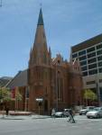 | 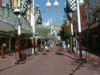 | 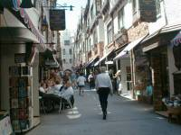 | 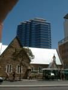 |
| Church | Down-town 01 | Down-town 02 | Street |
I thought of that Perth is also well-balanced town between traditional and modern structures. When I strolled about streets, I found a path that had strange atmosphere was maybe, as it were, Swiss town. An old church behind a big building left an impression on my mind.
Fremantle
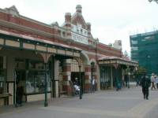 | 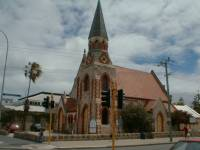 | 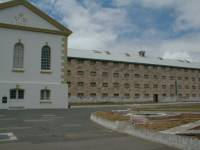 | 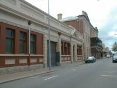 |
| Fremantle Market | Church | Old Prison Guardians | Old fashioned buildings |
Fremantle is a port town. I knew on TV that Japanese Antarctic expedition team call here lastly to go to the Antarctic Continent. Here is famous traditional port town and delicious sea food.
But buildings were something strange because of many buildings whose surface and figure were only traditional.
The suburbs of Perth
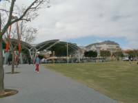 | 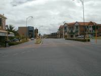 | 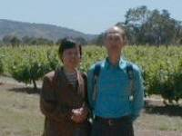 | 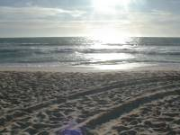 |
| Subiaco 01 | Subiaco 02 | Swan Valley | Sunset Coast |
Subiaco had got a name for Sunday Market. Furthermore I interested myself in how a suburb town was.I just went and looked around.
Guide books also introduced Swan Valley and Sunset Coast as short trips. I tried to go there.
Wild Flower(tour A)
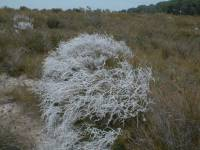 | 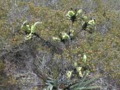 | 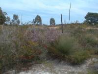 | 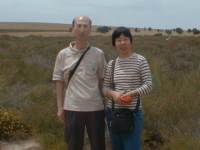 |
| Wild Flower 01 | Wild Flower(Kangaroo paw) | Wild Flower 03 | Wild Flower 04 |
Do you know what is wild flower? It sounds good, right? I also interested in wild flower and looked for the tour including wild flower admiring. In spring we can see Wild Flower in Western Australia.
Pinnacle(tour A)
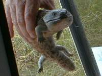 | 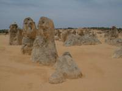 | | 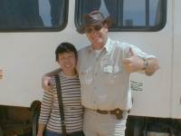 |
| Animal | Pinnacle 01 | Pinnacle 02 | Pinnacle 03 |
Our driver caught a strange animal and showed us.
Pinnacle we saw was fossil Virgin Fores. Enormous long time and complicated mechanism would made those queer national phenomenon. Here would be the bottom of sea long time ago.
I like western hat which is very stylish, I thing of. Our guide wore, so if I went well with it, I would buy immediately. By the way, in Australia small tour has a person who is not only guide but also driver. I used to have two people, the guise and driver for tours in South Asia even if the tour members are just for us.
Whale Watching(tour B)
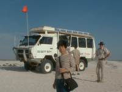 | 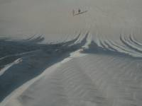 | 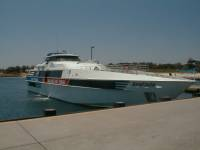 | 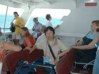 |
| Desert 01 | Desert 02 | Whale Watching 01 | Whale Watching 02 |
We really got kick out of 4WD and Desert. We felt falling down straight into the bottom of a huge hall whose wall looked about an angle of 45. It was thrilling.
We couldn't help disappointing Whale Watching tour. That day we expected to see whale jetting water and embarked at the boat. After a while we were delivered binoculars made of paper and we thought of that we might not see whales straight on our eyes. After that we watched just sea by them but nothing happened. When we were leaving the boat, we were delivered tickets that indicated half price discount.
York
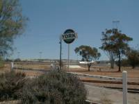 | | 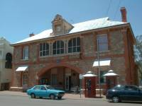 | 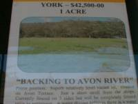 |
| York 01 | York 02 | York 03 | York 04 |
I really wanted to come here because of the country side of Australia. Specially, York is famous for the rural districts of English style. In town most structures on a main street has plates that showed ages, around 1850. Do you want Land around here, and do you think of whether or not it is expensive if 1 acre was 42,500 AU$.
{kind=link}
{kind=link}
{kind=link}
{kind=link}
{kind=link}